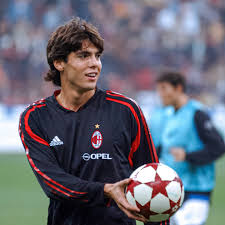
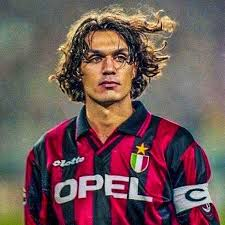
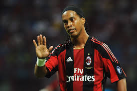

Ricardo kaka

Ricardo Kaká, born 22 April 1982 in Brasília, Brazil, is a retired Brazilian attacking midfielder known for his elegance on the ball, explosive acceleration, and creative playmaking. He rose to global stardom at São Paulo FC before moving to AC Milan, where he became one of the world’s top players and won the Ballon d’Or in 2007. Kaká later played for Real Madrid, returning to Milan and finishing his career in the MLS with Orlando City and a final stint at São Paulo. Off the pitch, he is recognized for his philanthropy, humility, and strong personal faith.
Kaká’s performances in Brazil caught the attention of European scouts, leading to his transfer to AC Milan in 2003, where he became one of the world’s greatest midfielders. His combination of speed, technique, vision, and humility made him a fan favorite. In 2007, after leading Milan to Champions League glory, he won the Ballon d’Or, becoming the last player to win it before the Ronaldo–Messi era. In 2009, he moved to Real Madrid, joining the star-studded “Galácticos” project, where injuries affected his consistency but he still contributed to major titles. He later returned to Milan before helping launch Orlando City SC in Major League Soccer, becoming one of the league’s early global icons.
Beyond the pitch, Kaká is known for his strong Christian faith, his charity work, and his calm, grounded personality. He has served as a UN World Food Programme ambassador, using his fame to support humanitarian efforts. After retiring in 2017, he has remained involved in football in ambassadorial and advisory roles while maintaining a low-key personal life centered around family and philanthropy.
- FIFA World Cup: 2002
- UEFA Champions League: 2006–07
- FIFA Club World Cup: 2007
- Serie A: 2003–04
- La Liga: 2011–12
- Copa do Rey: 2010–11
- Supercoppa Italiana: 2004
- Supercopa de España: 2012
Paolo Maldini

Paolo Maldini is widely regarded as one of the greatest defenders in football history—a symbol of loyalty, elegance, and defensive mastery. Born on 26 June 1968 in Milan, Italy, Maldini was destined for football greatness as the son of Cesare Maldini, another AC Milan legend. He joined AC Milan’s youth academy at a young age and made his senior debut at just 16 years old in 1985. From that moment, he became a permanent fixture in the squad, eventually spending his entire 25-year career with the club, an exceptionally rare achievement in modern football.
Throughout his career, Maldini played primarily as a left-back and later as a center-back, known for his exceptional positioning, anticipation, calmness under pressure, and ability to read the game rather than rely on aggressive tackles. His leadership qualities led to him becoming Milan’s long-time captain, guiding one of the most dominant eras in the club’s history. He also had a distinguished international career with Italy, earning 126 caps, appearing in four World Cups, and reaching the 1994 final.
After retiring in 2009 at age 41, Maldini stepped away from football for several years before returning to AC Milan in an executive role, where he helped reconstruct the team and oversaw their return to top-level success, including winning Serie A in 2022. His legacy extends beyond trophies—he symbolizes professionalism, discipline, loyalty, and class, inspiring generations of defenders around the world.
- 7× Serie A
- 5× UEFA Champions League / European Cup
- 5× Supercoppa Italiana
- 5× UEFA Super Cup
- 2× Intercontinental Cup
- 1× FIFA Club World Cup
- Coppa Italia
Ronaldinho Gaucho

Ronaldinho, born Ronaldo de Assis Moreira on 21 March 1980 in Porto Alegre, Brazil, grew up in a football-loving family. His father, João, worked at a local club and encouraged his sons’ involvement in sports, while his older brother, Roberto, was a professional footballer whose career greatly inspired Ronaldinho. From the moment he could walk, Ronaldinho showed remarkable coordination and creativity with a ball. By age 10, he gained national attention after scoring 23 goals in a single futsal match—an early sign of his extraordinary talent.
He joined Grêmio’s youth academy, where his mix of street football, futsal technique, and natural flair shaped his unique style. In 1998, he made his professional debut for Grêmio and soon became one of the most exciting young players in Brazil. His performances earned him a place on the Brazilian national team and participation in international competitions, including the 1999 Copa América, where he scored one of the tournament’s most iconic goals with a stunning dribble and chip finish.
In 2001, Ronaldinho moved to Paris Saint-Germain, marking the beginning of his European journey. While his time in France had ups and downs, it also showcased his incredible dribbling, free-kick abilities, and unpredictable creativity. His explosive talent caught the attention of FC Barcelona, who signed him in 2003—this move changed his career and the club’s history.
After leaving Barcelona in 2008, Ronaldinho joined AC Milan, where he produced moments of brilliance but struggled with consistency. Still, he helped the club win the 2010–11 Serie A title. His later career included returning to Brazil with Flamengo and Atlético Mineiro, where he won the 2013 Copa Libertadores, becoming one of the few players to win both the Champions League and Libertadores. He finished his professional career with spells in Mexico and India before officially retiring in 2018.
- FIFA World Cup: 2002
- UEFA Champions League: 2005–06
- La Liga: 2004–05, 2005–06
- Ballon d'Or: 2005
- FIFA World Player of the Year: 2004, 2005
- Copa América: 1999
- FIFA Confederations Cup: 2005
- Supercopa de España: 2005, 2006
- Serie A: 2010–11 (with AC Milan)
- Recopa Sudamericana: 2013 (with Atlético Mineiro)
- Copa Libertadores: 2013 (with Atlético Mineiro)